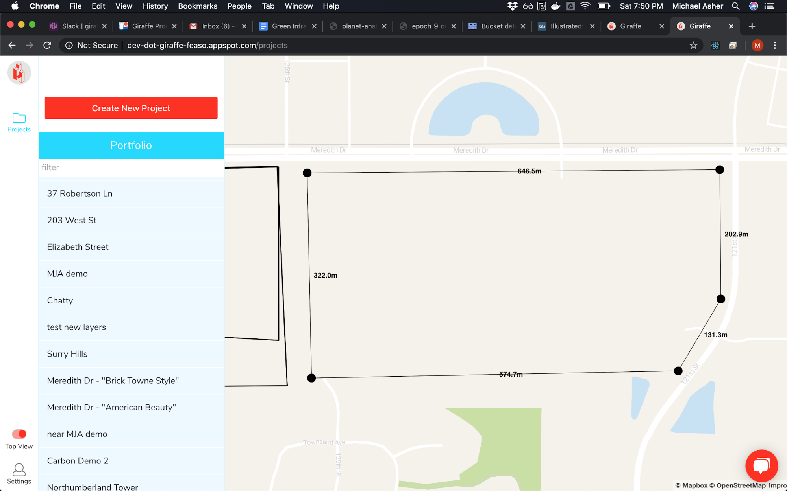
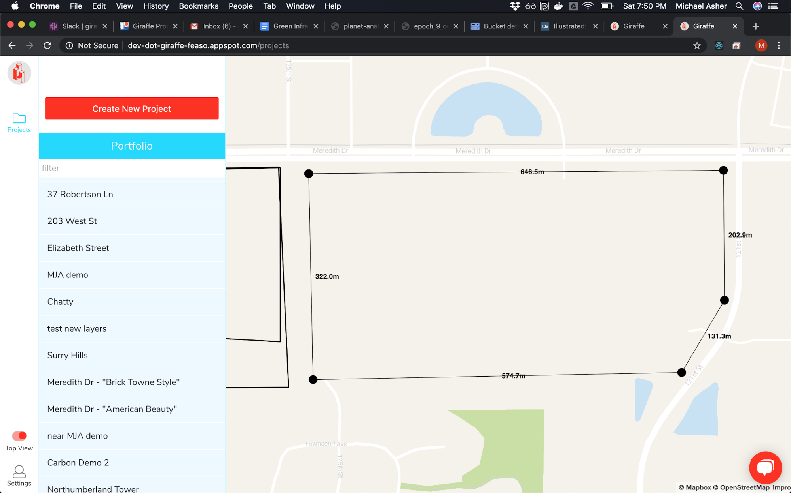

I’ve been observing parallels between AgTech and PropTech. Both agriculture and construction are very old industries. Both deal with land, lots of family businesses and use beautiful big machinery. Mckinsey even ranks both together[1] as the least digitized of all industries.
One huge difference between the industries has been productivity growth. In the US, agriculture’s Multifactor Productivity increased on average 1.2% a year from 1988 to 2018, while construction’s fell -0.7% a year.[2] So Mckinsey, who claims productivity growth and digitization are correlated, must be missing something. I think they’re wrong about digitization in ag - it is in fact a highly digitized industry if you simply recognize that tools like satellite guided tractors are more mechanical, but no less “digital”, than iPads.
PropTech is behind when it comes to apps too. AgTech apps like FarmLogs (left) have allowed farmers to digitize their field boundaries for 5+ years. PropTech apps like Giraffe (right) now allow property developers or urban designers to do the same for developments.
So if I’m right, and AgTech is a few years ahead of PropTech, what can citymakers learn from farmers? What value can increased digitization bring?
I’ll follow up with some of my own ideas, but whether you’re in agriculture or construction, what technology has bought the most value to you?